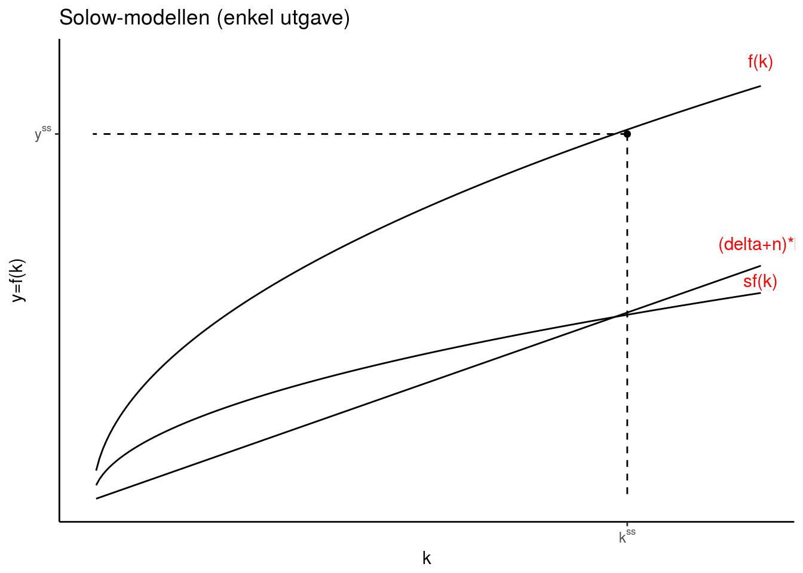
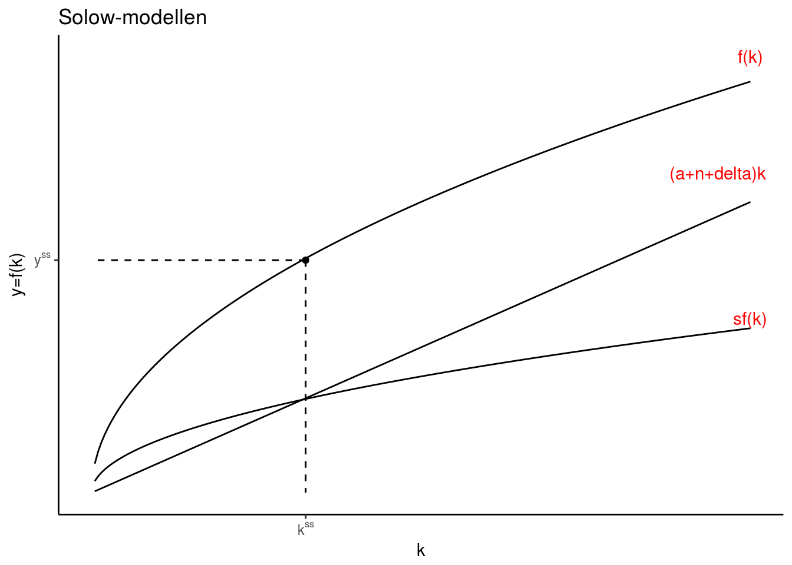
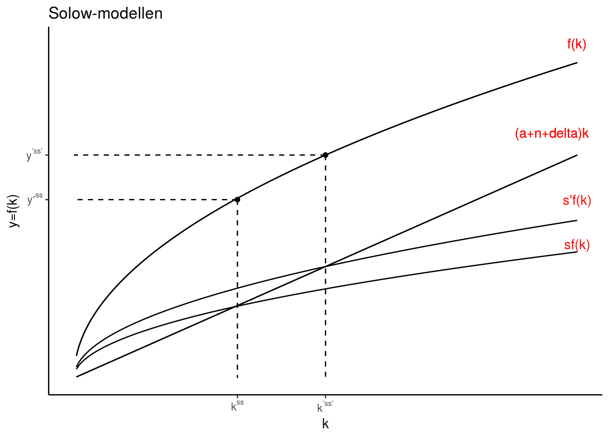

Vi er opptatt av økonomisk vekst i et land, fordi dette øker velstandsnivået blant landets innbyggere over tid
Det er vanlig å måle et lands velstandsnivå ved å dele BNP \(Y\) på antall innbyggere i landet \(N\), dvs \(Y/N\)
Målinger av dette finnes for de fleste land i verden: tabell fra Wikipedia
Institusjonene kan kalles ekstraktive dersom en elite (vanligvis i form av et totalitært regime) benytter disse til å ekstrahere verdier fra flertallet.
Institusjonene kan kalles inklusive dersom de sørger for privat eiendomsrett, borgerrettigheter, upartisk rettsvesen, fri etableringsrett og karrierevalg
Øvelse: Les artikkelen Venezuela Is Starving Its People og noter ned de eksemplene du finner på ekstraktive institusjoner
Solow-modellen har som bakteppe en økonomi med inklusive institusjoner. I tillegg kan vi konkretisere følgende forutsetninger:
Lukket økonomi uten offentlig sektor, \(Y = C + I\)
Full konkurranse i kapital- og arbeidsmarkedet (innsatsfaktoren avlønnes etter sin grenseproduktivitet)
Hele befolkningen er sysselsatt (ingen arbeidsledighet), \(L=N\)
Produktfunksjonen er homogen av grad én (dobling av innsatsfaktorene fører til dobling av produksjonen)
Homogen arbeidskraft (alle arbeiderne har like kvalifikasjoner)
Befolkningen i landet vokser med en konstant rate, \(\frac{\dot{N}}{N}=n\)
\[Y=F(K,AL) \text{ } F_{K}>0, F_{KK}<0, F_{L}>0, F_{LL}<0\] - Produktfunksjon er homogen av grad én (konstant skalautbytte). Som betyr at en t-dobling av innsatsfaktorene medfører en t-dobling av produksjonen \[tY=tF(K,L)=F(tK,tL)\]
Som betyr at en t-dobling av innsatsfaktorene medfører en t-dobling av produksjonen
\[y=f(k) \text{ } f'{k}>0, f''{k}<0\]
\(\text{2.}\) Sparing
\[S=sY=I\] 3. Kapitalakkumulasjon
\[\dot{K}=-\delta K + I\]
Starter med å dele \((3)\) på \(K\) og setter inn for \(I\) fra (2)
\[\frac{\dot{K}}{K} = -\delta + \frac{sY}{K}= -\delta + \frac{sY/N}{K/N}= -\delta + \frac{sy}{k} \]
Vi har at \(\frac{\dot{k}}{k} =\frac{\dot{K}}{K} - n\) (lenke her til regneregler), som gjør at vi ved innsetting for \(\frac{\dot{K}}{K}\) kan skrive
\[\frac{\dot{k}}{k} + n = -\delta + \frac{sy}{k} \]
Multipliserer vi uttrykket for \(k\) har vi kapitaldynamikkligningen for modellen
Kapitaldynamikken \[ \dot{k} = sf(k) -(\delta +n) k\]
Avlønning til kapitalen (viser dette på neste seminar): \[r = f'(k)- \delta\]
Avlønning til arbeidskraften (viser dette på neste seminar): \[w = (f(k) - f'(k)k)\]

Disse resultatene er overens med hva som ble beskrevet innledningsvis: BNP per innbygger har vokst og konvergert (dvs. mindre forskjeller) mellom land med inklusive institusjoner.
Modellen vil her være gitt ved (i neste seminar skal vi se nærmere på hvordan vi løser dette matematisk):
\[\dot{k} = sf(k)-(\delta+n+ a) k\] Avlønning til kapitalen: \[r = f'(k)- \delta\]
Avlønning til arbeidskraften: \[w = A\cdot (f(k) - f'(k)k)\]


I stasjonærtilstanden er BNP per effektiv arbeidskraftenhet konstant og gitt ved
\[\frac{Y}{AN}=y^{ss}\]
Dersom \(Y=\overline{Y}\) i steady state, har vi at
\[ln(\overline{Y}) - ln(N) - ln(A) = ln(y^{ss}) \Rightarrow \dot{\overline{Y}}/\overline{Y} - n - a = 0\]
Som betyr at
\[ \dot{\overline{Y}}/\overline{Y} = n + a \]
Dvs. trendveksten vokser med en rate som er lik summen av befolknings- og teknologivekst.
Øvelse (blir også gitt til seminaret) : Les artikkelen Economists vs. Scientists on Long-Term Growth og gi en kortfattet oversikt over hvilken faktorer som vil påvirke teknologiparameteren \(a\) framover.
Acemoglu, Daron, and James A Robinson. 2013. Why Nations Fail: The Origins of Power, Prosperity, and Poverty. Broadway Business.